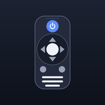
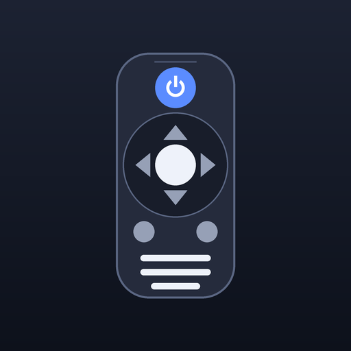
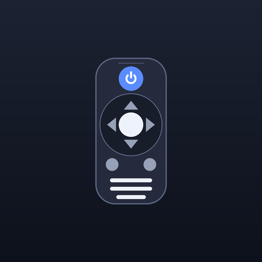
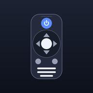
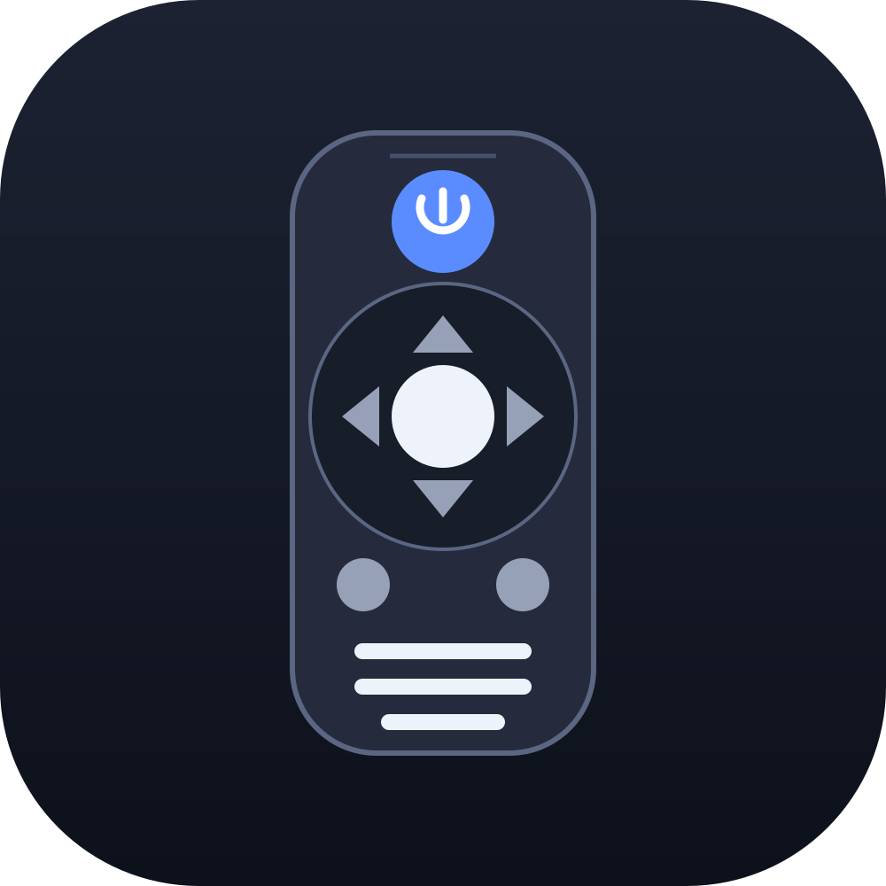

iOS 主屏幕
apple-touch-icon.png · 圆角
遥控器图案（蓝色电源键 + 圆形方向键 + 功能键 + 音量条）。深色渐变底与页面 --bgTop 一致，四角不透明，系统自行加圆角/圆形遮罩。





源文件：public/icon-*.png · public/icon.svg ·
重新生成：python tools/make_pwa_icons.py · 清单：public/manifest.json